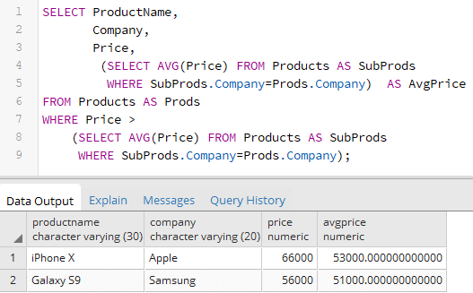

Вернуться на главную страницу →
Вернуться на главную страницу →
Подзапросы
Подзапросы (subquery) представляют такие запросы, которые могут быть встроены в другие запросы.
Например, определим таблицы для товаров, покупателей и заказов:
Таблица Orders содержит ссылки на две другие таблицы через поля ProductId и CustomerId.
Добавим в эти таблицы некоторые данные:
При добавлении данных в таблицу Orders как раз используются подзапросы. Например, первый заказ был сделан покупателем Tom на товар Galaxy S9. Поэтому в таблицу Orders необходимо сохранить информацию о заказе, где поле ProductId указывает на Id товара Galaxy S9, поле Price - на его цену, а поле CustomerId - на Id покупателя Tom. Но на момент написания запроса нам может быть неизвестен ни Id покупателя, ни Id товара, ни цена товара. В этом случае можно выполнить подзапрос.
Подзапрос представляет команду SELECT и заключается в скобки. В данном же случае при добавлении одного товара выполняется три подзапроса. Каждый подзапрос возвращает одно скалярное значение, например, идентификатор товара или покупателя.
В данном случае подзапросы выполнялись к другой таблице, но могут выполняться и к той же, к которой вызывается основной запрос. Например, найдем товары из таблицы Products, которые имеют минимальную цену:
Или найдем товары, цена которых выше средней:
Коррелирующие подзапросы
Подзапросы бывают коррелирующими и некоррелирующими. В примерах выше команды SELECT выполняли фактически один подзапрос для всей команды, например, подзапрос возвращает минимальную или среднюю цену, которая не изменится, сколько бы мы строк не выбирали в основном запросе. Результат такого подзапроса не зависел от строк, которые выбираются в основном запросе. И такой подзапрос выполняется один раз для всего внешнего запроса.
Но кроме того есть коррелирующие подзапросы (correlated subquery), результаты которых зависят от строк, которые извлекаются в основном запросе.
Например, выберем все заказы из таблицы Orders, добавив к ним информацию о товаре:
Здесь для каждой строки из таблицы Orders будет выполняться подзапрос, результат которого зависит от столбца ProductId. И каждый подзапрос может возвращать различные данные.

Коррелирующий подзапрос может выполняться и для той же таблицы, к которой выполняется основной запрос. Например, выберем из таблицы Products те товары, стоимость которых выше средней цены товаров для данного производителя:
В данном случае определено два коррелирующих подзапроса. Первый подзапрос определяет спецификацию столбца AvgPrice. Он будет выполняться для каждой строки, извлекаемой из таблицы Products. В подзапрос передается производитель товара и на его основе выбирается средняя цена для товаров именно этого производителя. И так как производитель у товаров может отличаться, то и результат подзапроса в каждом случае также может отличаться.
Второй подзапрос аналогичен, только он используется для фильтрации извлекаемых из таблицы Products. И также он будет выполняться для каждой строки.
Чтобы избежать двойственности при фильтрации в подзапросе при сравнении производителей (SubProds.Company=Prods.Company) для внешней выборки установлен псевдоним Prods, а для выборки из подзапросов определен псевдоним SubProds.